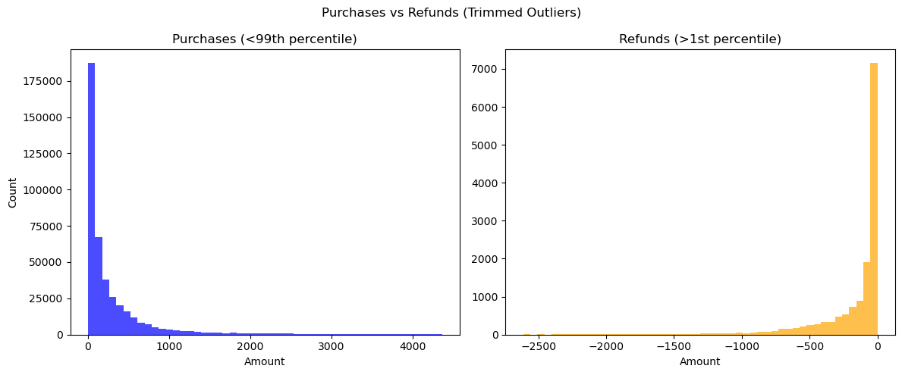
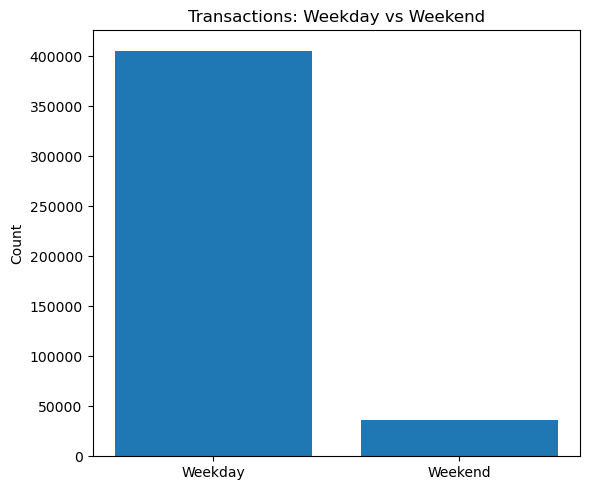
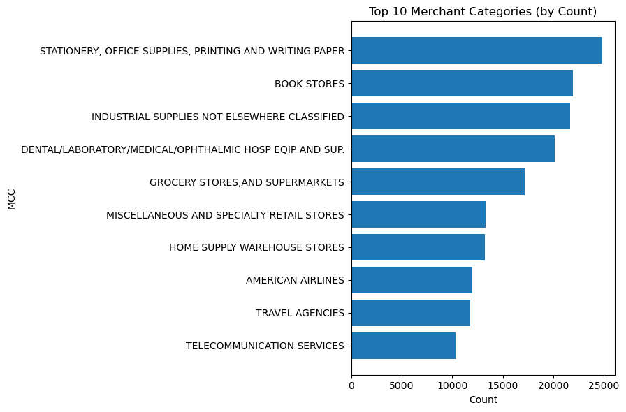
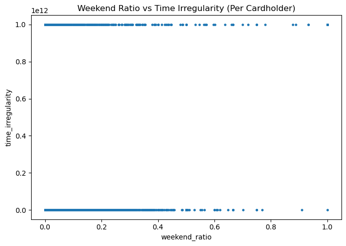

Purchase Card Fraud Detection: 6 Behavioral Features for Unsupervised ML
Analyzed a public-sector purchase card (pcard) dataset (FY 2014) to engineer six cardholder-level behavioral features for unsupervised anomaly detection. The analysis spans spending patterns, merchant category usage, vendor concentration, and transaction timing, turning raw card data into actionable compliance signals.
Purchase card datasets carry no fraud labels, making this a purely unsupervised problem. The goal is not to detect a known pattern, but to engineer features that move anomalous cardholders away from the dense cluster of normal behavior, giving algorithms like Isolation Forest, LOF, or autoencoders the structure they need to surface suspicious accounts.
The starting point is exploratory: understanding how money actually flows before building any feature. Where is spending concentrated? When does it happen? Are refunds proportionate? Those answers shape which signals are worth engineering.
5,466
Cardholders in feature table
6
Behavioral features engineered
FY 2014
Public-sector pcard dataset
Exploratory Analysis
Spending Behavior: Purchases vs Refunds
Before engineering any features, the distribution of transaction amounts is examined separately for purchases and refunds. Extreme outliers (top 1%) are trimmed so the core range is visible. Refunds are plotted separately because they appear as negative amounts and follow a different behavioral pattern than purchases.

Purchases vs Refunds (trimmed outliers). The purchase distribution is right-skewed, with most transactions small and a long tail of larger purchases. Refunds are far fewer in volume. A cardholder with an unusually high refund frequency or a refund-to-purchase ratio that deviates from peers is a compliance red flag.
Business insight: Refunds on a purchase card can indicate legitimate returns, but they can also mask fictitious purchase cycles where an employee buys, returns, and redirects the credit. Tracking refund volume per cardholder is a standard control in corporate card audits.
Spending Patterns
When and Where Is Money Being Spent?
Two of the most revealing business analytics questions for a purchase card program are: Are employees spending on work days? and What kinds of vendors are being used? Both are visible before any modeling.

Weekday vs Weekend volume. The large majority of transactions occur on weekdays, consistent with legitimate business use. The weekend volume, while smaller, is significant enough to warrant per-cardholder analysis rather than dismissal.

Top 10 Merchant Categories (MCC). Spending clusters in predictable categories for a government agency. Any cardholder whose MCC profile diverges sharply from the population norm warrants review.
Business insight: Weekend transaction volume is a first-pass compliance filter in most corporate card programs. MCC-level visibility answers the harder question: even transactions on weekdays could be for non-business purposes if they go to entertainment, personal services, or luxury retail MCCs not typical for the agency's function.
Vendor Concentration
Who Is Getting Paid?
Vendor-level data is one of the most useful signals in purchase card analytics. Legitimate usage typically distributes spend across multiple recurring vendors (airlines, office suppliers, hotels). When a single vendor dominates a cardholder's activity, it raises questions about whether that concentration reflects genuine business need or a preferential or fraudulent arrangement.
Top 10 vendors by transaction count across all cardholders. A handful of vendors account for a disproportionate share of total transactions. At the population level this is expected (e.g., travel vendors dominate business card spend). The anomaly signal lives at the individual level: a cardholder whose top vendor share far exceeds their peers' norm.
Business insight: Vendor concentration analysis (the "top vendor dominance ratio" feature) is a standard input to procurement fraud detection. It catches preferential awarding of business to a single supplier, split-purchase schemes designed to stay under approval thresholds, and automated or scripted card testing against a single merchant.
Feature Engineering
Six Behavioral Features for Unsupervised Detection
Each feature is designed around a different axis of behavior, so that a legitimate cardholder is unlikely to score anomalously on multiple dimensions at once, while a bad actor is more likely to stand out on several simultaneously.
#
Feature
What It Captures
Anomaly Signal
F1
Amount Z-Score (P95)
Spending magnitude vs personal baseline
Out-of-character large purchases
F2
Time Irregularity
Cadence of inter-transaction gaps
Robotic or burst-fire patterns
F3
MCC Entropy
Diversity of merchant category usage
Unusual concentration in one MCC
F4
Weekend Ratio
Share of transactions on weekends
Off-hours spending above peer norm
F5
Top Vendor Dominance
Fraction going to single top vendor
Funneling or preferential vendor use
F6
Settlement Lag Z-Score
Deviation in posting delay vs personal norm
Atypical processing timing

Weekend ratio vs time irregularity (per cardholder). Most cardholders cluster near the origin: low weekend activity and normal transaction spacing. Outliers in the upper-right corner show both elevated off-hours spending and irregular cadence simultaneously, a joint signal that would rank highly in any density-based or isolation-based unsupervised detector.
Key design principle: Each feature targets a structurally distinct behavioral axis. When combined in a model like Isolation Forest, features that are individually weak become jointly powerful. A legitimate cardholder might score high on one dimension by chance; scoring anomalously on three or more dimensions simultaneously is far more suspicious.